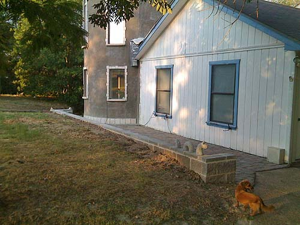
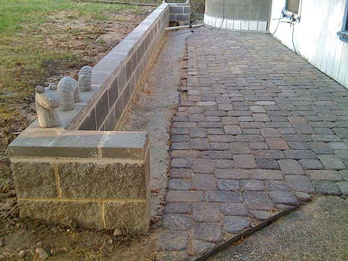
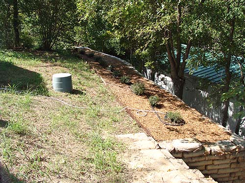
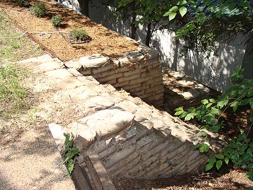
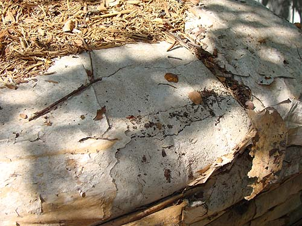
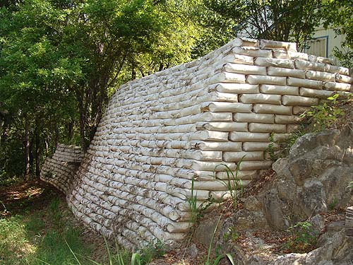
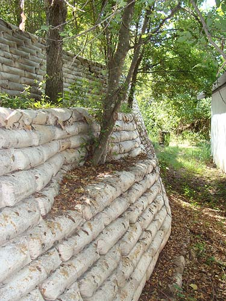
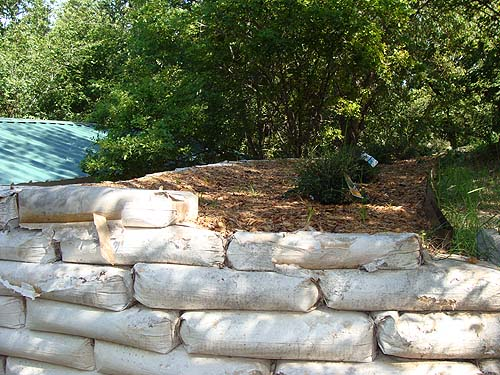

The front wall finished, and stepping
stones laid with a slope, so the water goes where it should.

Personally I'd like ballustrades along
this wall. Maybe when it's really a castle.

Leslie finished this off a bit more
since this picture. When it rains, everything goes down the drain now,
and nothing sits against the house.

Hopefully these bushes will grow larger
and fill that edge by the wall, to protect from the drop off. We're still
trying to decide what to do with the rest of the 'yard'.

The bags are starting to peel and
look a bit ragged, especially on the stairs.

There are cracks in the concrete,
but the forms feel quite solid and I think it would take a lot to break
a segment off.

From below, most of the bags are still
intact.

The trees survived the disruption,
so far.

The main thing is that the wall is
holding all the dirt in.